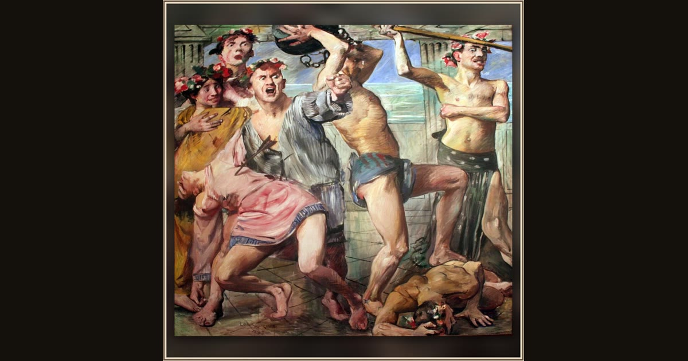

The Suitors Fighting Odysseus
Lovis Corinth · 1913 · Berlinische Galerie · Berlin, Germany
Painted for a grand villa’s dining room, the panicked suitors scramble and tumble as the true king of Ithaca reclaims his home. Explore its place in Book XXII of the Odyssey.